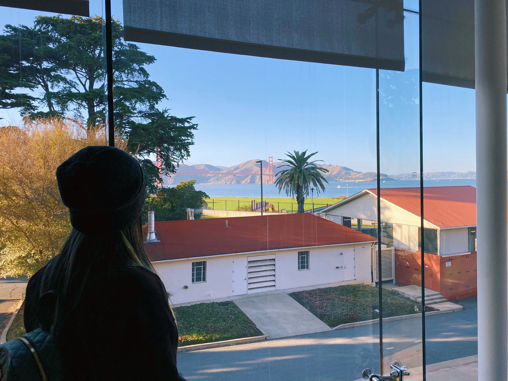

Working across illustration, comics, and visual development,
both independently and in collaboration.
Academy of Art University (MFA)
China University of Geosciences, Wuhan (BFA)
both independently and in collaboration.
Academy of Art University (MFA)
China University of Geosciences, Wuhan (BFA)
Welcome to "The Rhapsody".
I hope you will have a pleasant journey.
I hope you will have a pleasant journey.